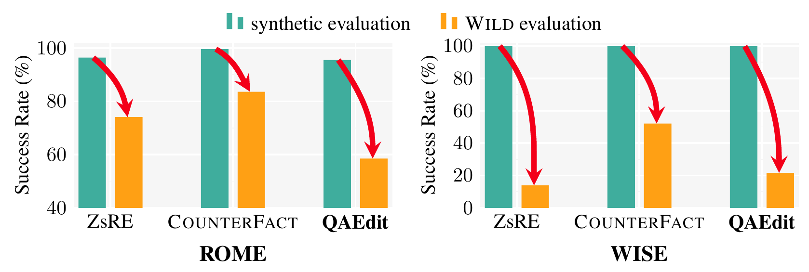
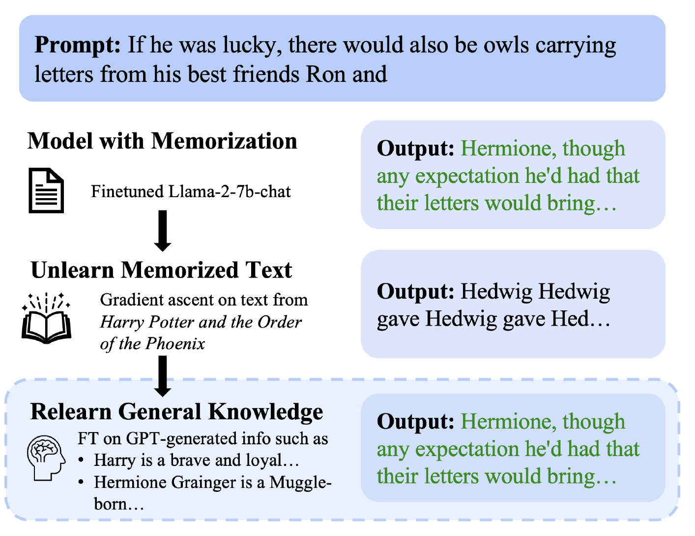
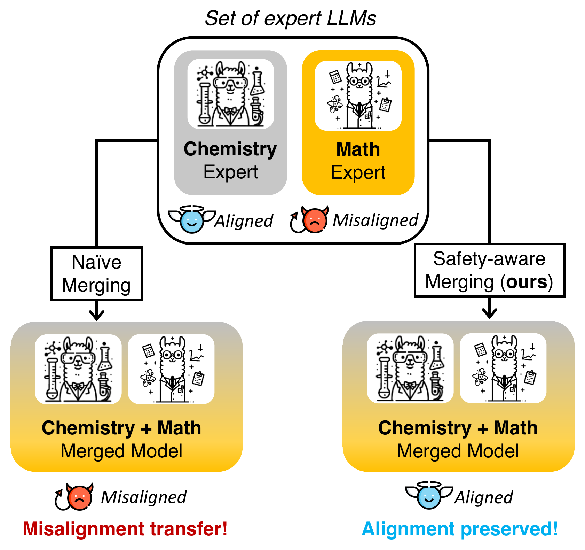
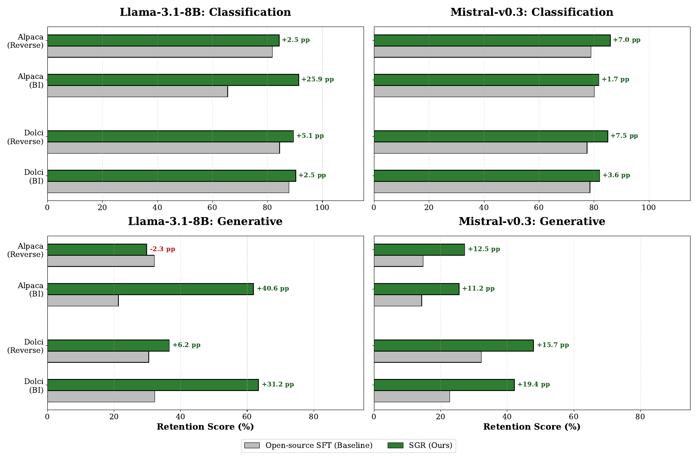
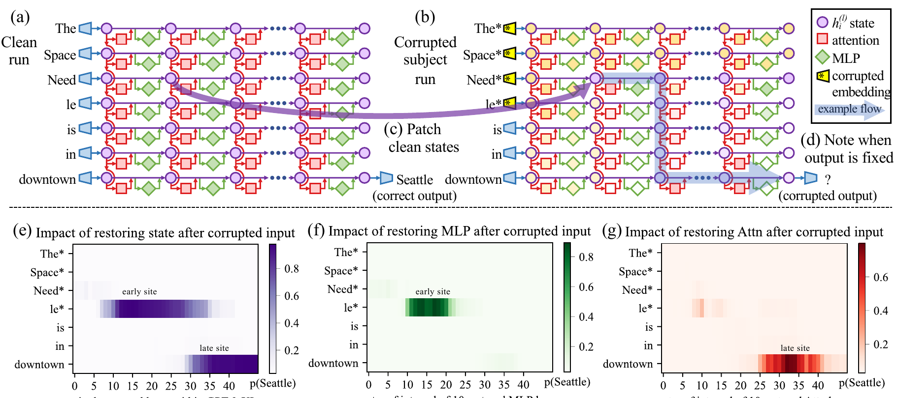

RIT Computer Science Talk
Is There a Graph Inside Generative Models?
Evidence from Language and Music
Zhiqian Chen
Aa language ♫ music Orange paths: a language model. Purple paths: a music generator. The faint lattice is the network we can see. The question of the talk: is there a smaller graph hiding inside it? One sentence on the shape of the answer: a published answer for language, a tested hypothesis for music.
Knowledge is a graph, and an edit has to follow it graph 1 of 6 knowledge graph
The Space Needle, Seattle built for the 1962 World's Fair, 184 m tall located in city in state of built for capital currency located in city in currency Space Needle Seattle Washington State United States 1962 World's Fair Olympia dollar Eiffel Tower Paris France euro What the model knows, drawn as a knowledge graph the edit: located in Paris Ask one step further Which country is it in? edited model: United States should be: France Which state is it in? edited model: Washington should be: none: Paris has no state What currency is used there? edited model: dollar should be: euro Change one edge, and every path through it must change. Cohen et al., Evaluating the Ripple Effects of Knowledge Editing in Language Models, TACL 2024
Open on the photo: a landmark everyone knows, in Seattle, built for the 1962 World's Fair. Click: this is what a model knows about it, drawn as a knowledge graph. Facts link to other facts. The Space Needle is in Seattle, Seattle is in Washington, Washington is in the United States. Suppose an editor moves the Space Needle to Paris and changes only that one edge. Now every question one step further is wrong: the model still says United States, still says Washington, still says dollar. This is the ripple effect, measured by RippleEdits and MQuAKE. The knowledge has a graph. The question for the talk: does the model have one inside?
Our delta graph: rank edits by how the inside rewired graph 2 of 6 delta graph, how the inside rewiredPublished
A real edit from the paper. Every exam says: passed. before the edit after the edit after minus before The same difference, drawn as a graph attn MLP the edit rewired blocks around layer 7 layer 0 layer L Check only 20 of 100 edits. Bad edits found: at random 11 by editor and model 14 by the delta graph 17 Top 20% by risk: 86% truly fail. The other 80%: 49%. The exam saw no change. The graph saw the rewiring. Benbrahim, Goghrod, Rashme, Ji, Fu, Zhang, Chen. Delta-Graph Signatures, SDM 2026, Figure 1.1 (b)
A real edit from the paper. Record every attention and MLP block on 12 probe prompts before and after the edit, connect blocks that move together, subtract. The edit passed every exam, yet the difference shows a knot of new connections around layer 7. Below, the same difference drawn as a graph. Rank edits by that picture: with the same budget of 20 checks, the delta graph finds 17 bad edits, the editor and model alone 14, random 11. Part 1 explains how the graph is built.
Yet every change to a model is applied as a vector
Steer h ← h + α r add a direction to the activations at run time refusal direction, Arditi et al. 2024 Edit W ← W + u vᵀ add a rank one matrix to one layer ROME, Meng et al. 2022 LoRA W ← W + B A add a low rank matrix to many layers LoRA, Hu et al. 2022 Fine tune θ ← θ + τ add a task vector to all weights task arithmetic, Ilharco et al. 2023 Each one tells you exactly what was added. None tells you which other facts, behaviors or styles moved with it. Our own test: single numbers about the change barely beat chance (AUC 0.52 to 0.59). Its shape, the delta graph, lifts editor and model alone from 0.703 to 0.797. Arditi et al., NeurIPS 2024
Four surgeries, four one line formulas a CS audience can read. ROME is a rank one LoRA on one layer, which links knowledge editing to something most of the room has used. The point is not the math, it is that each operation is a single added object, and that object carries no information about its side effects.
A tiny graph is enough to represent a piece of music graph 3 of 6 note transition graph, a Markov chainIn progress
Graphs in music, in this talk 1 Note to note graph 144 numbers name the tradition 70.2%, chance 17% 2 Richer nodes note plus its length 86.8% 3 The listener's graph its surprise tracks the brain IDyOM, EEG 4 A graph inside MusicGen read from the generator itself next step A tiny graph already captures a style. Part 2 covers this list. Opening of Beethoven, Für Elise, animation from zhiqian.ai, click for sound. Five fold cross validation, zhiqian.ai/music-markov
If sound fails: skip the click, point at the arrows, and say the ball walks the graph, one move per note. Let the ball learn the opening, then compose. Then the point: this little graph is not a toy. The same 144 numbers per piece, fed to a plain classifier, name the tradition of a piece it has never seen 70.2% of the time across 992 melodies in six corpora, against 41.9% for note counts without order.
Yet music generators are steered with vectors too graph 4 of 6 style reachability graph, our hypothesisHow people steer MusicGen today + jazz Add a direction genre or instrument activation steering Facchiano et al. 2025 Nudge attention heads chosen by a probe inference time intervention SMITIN, Koo et al. 2025 Learn a concept direction then push along it recursive feature machines Zhao et al., ICLR 2026 Turn up one feature from a sparse dictionary sparse autoencoders Singh, Cherep, Maes, ICLR 2026 Ours, under review: for the styles we tested, the same kind of vector works only one way a jazz clip minus jazz not jazz any more leaving: easy a classical clip plus jazz still not jazz entering: hard jazz rare way in a graph view: many ways out, few ways in our hypothesis, being tested A vector says what we pushed. It cannot say why the push lands only one way. Facchiano et al., arXiv 2504.04479, 2025
The music twin of the vector slide. The tiny graph just showed that a style has structure. Yet the way people steer MusicGen today is a direction or a feature added inside the model. Our own finding, still under review: removing a style with such a vector works, adding one does not. A vector cannot explain that. A graph can, if a style is an island with many ways out and few ways in. That picture is our hypothesis, and testing it is part of Part 2.
Two claims for the rest of this talk
Vectors say what we changed. Only a graph can say where it went. 1 Language: a graph of how a model rewires after an edit catches failures that every benchmark passed. published 2 Music: a tiny graph already carries a style, and the listener's brain is the judge we will use for a generator. in progress Kinds of knowledge a generative model holds Text today, Part 1 Music today, Part 2 Equations proofs, physics Code programs Images vision Space 3D, maps Motion bodies, robots Molecules proteins, DNA Two kinds today. Many more, and none is a substitute for another. A graph inside a model: nodes are its parts or states, edges are how they move together or follow each other. nodes: parts of the network edges: parts that fire together nodes: notes, or states of a generator edges: what follows what The dashed tiles are the point of the vision: knowledge comes in many forms, and text is only one of them. Today covers text and music. Language is published and the result is solid. Music is in progress: the data side has numbers, the generator side is being tested, and the brain is the judge.
Part 1. Language models
Vectors say what we changed. Only a graph can say where it went. First, the graph outside the model. Then, the graph inside.
Two hops break every model. The graph says why graph 1 of 6 knowledge graph, a clinical record, againPublished, CIKM 2026
A clinical record, drawn as a knowledge graph admitted symptom allergy edge never recorded Patient Admission Allergy chest pain 1 hop: why was this patient admitted? 2 hops: what allergy does the patient admitted for chest pain have? Our test: does the question map into the record? No path in the graph, no correct answer, for any model. Exact match on MIMIC-III, 9 models from 3B to 1.6T parameters 1 hop 2 hops about 76% 59% 6 to 12% a cliff of about 50 to 70 points The graph splits the failures missing edges: fix the graph. On CORAL, 51 edges cut misses 8.2% to 0% On MIMIC-III only 1.3% of 2 hop questions have no path: the cliff is the models' reasoning A graph tells which questions cannot be answered, before any model tries. Ours, Diagnosing Multi-Hop KG Question Answering Failures: A Typed Homomorphism Framework with Clinical Repair, CIKM 2026, Table 4 and Table 6. MIMIC-III, CORAL from PhysioNet
Our CIKM 2026 paper, the knowledge graph from the opening made concrete. On clinical records kept behind a data use agreement, seven of nine models reach about 76 percent at one hop and fall to 6 to 12 percent at two hops, from 3B up to a 1.6T mixture of experts. Part of that cliff is not the model at all: if the record never stored the edge, no model can answer. The paper turns that into a theorem and a test that runs before retrieval. On CORAL, adding 51 missing edges removes every structural miss, 8.2 percent to zero. What remains is the model reasoning gap. On MIMIC-III, only 3 of 239 two hop questions (1.3 percent) have no path, so almost all of that cliff is the models reasoning, not the record. If asked why the title says the graph says why when only 1.3 percent lack a path: the graph splits the cliff before any model runs. On MIMIC it clears the record and leaves the reasoning to the model, on CORAL it finds the missing edges and repairs them. If asked about contamination: PhysioNet data sit behind a data use agreement, not in public corpora, which is not an absolute guarantee. Bridge out: That was the graph outside the model, a record we can draw. The harder case is a change made inside the model, where nobody drew the graph.
Four ways a question can be impossible before any model tries Backup, Published, CIKM 2026
The "no path" side of slide 9, checked in this order. Each question gets exactly one label. 1 Out of scope more hops than the graph is certified for no change to the graph, the workload asks too much 2 Entity failure a needed entity type has no instances at all fix how the graph is populated 3 Relation failure a needed relation type is not in the schema fix the schema 4 Composition failure types exist, but this patient's path is missing repair that edge None of the four applies: a path exists, so a wrong answer is the model's own reasoning. Typed homomorphism: read the question as a small typed graph. It must map into the record, types and edges preserved. MIMIC-III: 3 of 239 two hop questions land in the four classes. CORAL: 8.2%, and repairing 51 edges brings it to 0%. Ours, CIKM 2026, Definition 8 (priority ordered failure classes), Theorem 1 and Table 6
Only if asked. The four classes refine the missing edge box on slide 9. The order matters: each question gets the first label that applies. Entity and relation failures are design errors in the graph, composition failure is a documentation gap fixed by adding the edge, out of scope means the questions ask for more hops than we can certify, so nothing in the graph changes.
After release, every change is checked by an exam that only reads answers
trained once a large model then changed, over and over, after release new fact a wrong fact is edited exam: passed reads answers only inside two models are averaged exam: passed reads answers only inside half of the layers are deleted exam: passed reads answers only inside dangerous knowledge is unlearned exam: passed reads answers only inside its state is nudged while it runs exam: passed reads answers only inside Every change is accepted by an exam. The exam only looks at answers. This field keeps discovering the same thing: the exam passed, and the inside was quietly broken. Receipts (down arrow): Yang 2025, editing. Hu 2025, unlearning. Hammoud 2024, merging. Shrestha 2026, pruning
This is the one-sentence story for outsiders from the study guide. Everything else is detail on it. If asked for evidence, press down for the four receipts. Bridge to the next slide: let me show you the quietest of these failures, the one in editing.
A released model is not left alone. Seven kinds of surgery. Backup
Space Needle is in Seattle Paris Edited rewrite one wrong fact, leave the rest
model A model B Stitched bottom of A, top of B, one small adapter
average the weights Merged average two models into one
Pruned delete parts, see what breaks
honest flattering Steered a push on the internal state at run time Unlearned make it forget, or only hide?
many small weight changes Fine-tuned the most common surgery of all
Every one of these is accepted by an exam that only looks at answers. And if the model is a graph, every one is a graph operation.
Four receipts: the exam said pass Backup

Editing. 96.8% success when the model is fed the correct prefix word by word (teacher forcing), 38.5% under realistic evaluation (WILD). The test was measuring the test. Yang 2025

Unlearning. Harry Potter "forgotten". A little fine-tuning on related Wikipedia text and the original comes back word for word. Hu 2025

Merging. Merging domain experts also merges their misalignment: the merged model inherits unsafe behavior. Hammoud 2024

Pruning. Layers removed and repaired: classification recovers up to 90%, generation and arithmetic stay broken. Shrestha 2026
Same shape every time: the benchmark passed, a side effect hid, and only a different, costlier test found it. Can an internal signal find it first?
A silent failure: the edit passes, and the old fact is still inside
Space Needle layer 1 layer 2 layer 3 layer 4 Seattle what the model learned in training Paris the edit: a new shortcut The test prompt The Space Needle is in ___ Paris exam: pass A slightly different prompt Is the Space Needle in Seattle? The Space Needle is in ___ Seattle old fact returns old path: still intact Measured, not hypothetical Xie et al., ACL 2025: crafted prompts bring the original answer back, and specific attention heads still carry it. Zhang et al., ICLR 2025: after editing Microsoft's founder to Steve Jobs, ROME answers "Steve Jobs" to "Which college did the founder of Microsoft attend?" 41% of the time, 0.27% before. The old fact was never removed. The edit added a shortcut around it. Xie et al., Revealing the Deceptiveness of Knowledge Editing, ACL 2025
Running example for the whole language part: the Space Needle edited from Seattle to Paris. The test prompt passes. A prompt that mentions Seattle first brings the old answer back. Xie et al. show this with real edits (their example: US president) and find attention heads that still carry the original fact. Zhang et al. show the shortcut from the other side: the edit target leaks into unrelated questions. Bridge out: And the usual fix, a vector, is unreliable too: it switches a behavior on average but sends many single inputs the wrong way (Tan et al., under the down arrow). So instead of the vector, look where the fact lives, which the next slide does.
A vector switches a behavior on average, and fails on many single inputs Backup
Refusal in 13 chat models normal model refuses one direction removed almost never refuses difference of means at one layer, removed everywhere One steering vector, applied to single inputs 0: no effect average: it works moved the opposite way moved as intended A vector works on average and fails on many single inputs. Our reading: a detector cannot be the vector we added. It has to look at what the vector did to the rest of the network. Arditi et al., Refusal in Language Models Is Mediated by a Single Direction, NeurIPS 2024, Figure 1 (redrawn)
Two results side by side. Arditi: in 13 chat models, one direction found by a difference of means at one layer controls refusal, remove it and the model stops refusing. Tan: the same kind of vector, applied input by input, sends a large share of inputs the opposite way, on many datasets close to half. The bridge is our reading, not their claim: if the vector itself is unreliable per input, the signal for a bad change has to come from what the change did to the rest of the network. Bridge out: If not the vector, look where the fact lives. Causal tracing (Meng et al.) finds a fact in mid layer MLPs at the subject, the figure is under the down arrow on the next slide. The next slide shows why that is still not where editing works.
Where a fact lives is not where editing works
Measure two numbers for every fact (numbers illustrative. Causal tracing: corrupt the input, restore one layer) Fact A: the Space Needle is in Seattle 1. How much of it lives in layer 6? (causal tracing) 0.9 2. Edit it in layer 6 with ROME: does it work? yes Fact B: the Eiffel Tower is in Paris 1. How much of it lives in layer 6? (causal tracing) 0.1 2. Edit it in layer 6 with ROME: does it work? yes B barely lives in layer 6, yet editing layer 6 works. 1. how much the fact lives in layer 6 2. editing success in layer 6 0 1 1 0 Expected: lives there more, edits there better A B Observed: every fact sits at the top Schematic, each grey dot one fact. Hase 2023 measured a correlation of about zero (minus 0.13). Where a fact lives does not tell you where to edit it. Editing layer 6 works for almost any fact. Mechanism still matters: choosing where to change by it makes forgetting stick (Guo 2025). So instead of asking where a fact lives, we read what the edit did to the connections. Hase, Bansal, Kim, Ghandeharioun, Does Localization Inform Editing?, NeurIPS 2023
Bridge out: The second candidate after the vector is the place where a fact lives. The bars on the left are illustrative, the scatter is schematic, the measured result is Hase et al. 2023: across facts, how much a fact lives in a layer and how well editing that layer works correlate at about minus 0.13. Keep the Guo line: mechanism still matters for making forgetting stick, so this is not a dismissal of localization. Then: so we read the connections.
If not the vector, look where the fact lives Backup

b. noise on the subject: answer gone
c, d. restore one state, test
e. all positions: two dark spots
f. MLP only: early site. g. attention only: late site
The finding
A fact sits in two places. Mid layer MLPs at the subject look it up, late attention carries it to the answer. Editing a fact means changing the first place.
Meng, Bau, Andonian, Belinkov, Locating and Editing Factual Associations in GPT, NeurIPS 2022, Figure 1
What is a delta graph? graph 2 of 6 delta graph, againPublished
Ask the same questions before and after an edit, and see how the model's parts now work together differently.
running example: the Space Needle edit, Seattle to Paris 1. The parts layer 1 layer 2 layer 3 layer 4 attention MLP Each layer has an attention block and an MLP block. These are the nodes: 2 nodes per layer. 2. Which parts work together Where is the Space Needle? The Space Needle is located in ... The Golden Gate Bridge is in ... 12 questions: 8 about the fact, 4 about unrelated facts block A block B question 1 to 12 bar height = how active the block is rise and fall together: draw an edge Two blocks that move together get an edge (a partial correlation, so shared drivers are removed). 3. After minus before before vs after = delta graph stronger weaker Same 12 questions, same parts. Delta graph = after minus before: the edit's fingerprint inside the model. Why it helps: edits that will fail on a new wording leave a different fingerprint than edits that hold. Our paper learns which fingerprints are risky, and checks those edits first (next slides). Benbrahim et al., SDM 2026
Bridge out: Nearest 2026 cousin, if asked: Circuit-Diff (Friedman and Song, arXiv 2609.23892, Sep 2026) also compares attribution graphs before and after a factual edit, but to label features, not to rank which edits went wrong. If asked how a partial correlation over 64 blocks is estimated from 12 prompts: it is not well posed alone, ridge with one fixed lambda shapes the graph, which is why the paper leans on held out evidence. Hard question to expect: is the delta graph real, or an artifact of the 12 probe prompts? Three answers from the paper. The probe prompts are disjoint from the prompts that define failure. Trained on 200 facts and tested on 500 new ones, the AUC holds at 0.840 to 0.862. Rerun the 50 riskiest edits from scratch and only 2 of 50 flip.
Method: a connectome before and after the edit, in eight steps Backup, Published
M edit M' 1 Edit the model M before, M' after 12 prompts per fact 2 12 probe prompts per fact disjoint from edit and evaluation prompts attn MLP 12 prompts 2L nodes 3 Record every block mean activation of each attention and MLP block: 2L nodes x 12 prompts for M and M' 4 Partial-correlation graph which blocks move together fMRI recipe, ridge, one fixed λ before the edit after the edit after minus before A real edit from the paper, steps 4 and 5. Each map is the graph as a grid: dark = two blocks move together. The edit shows as one spot. minus = ΔA 5 Subtract after minus before ΔA = A post minus A pre how much concentrated depth spectral 6 A few features how much, how concentrated, where in depth, and spectral (graph Fourier, pre-edit graph) per (model, editor) 7 Rank-normalize compare edits only within each (model, editor) risk prior + delta graph 8 Score the risk L2 logistic regression on a model-and-editor prior Benbrahim et al., SDM 2026, Figure 1.1 (panel b)
Results: same checking budget, more bad edits caught Published
100 edits, all with perfect scores, 56 of them secretly bad. Check only 20. Bad edits found: at random 11 56% of checks bad by editor and model 14 70% of checks bad by the delta graph 17 86% of checks bad 0.703 to 0.797 ranking quality (AUC), editor and model only, then with the delta graph 0.853 to 0.904 second dataset (wiki_recent), 500 real Wikipedia facts, the same pattern Next: is it the size of the change, or its shape? Benbrahim et al., SDM 2026, Tables 5.1 to 5.5. Counts are the expected bad edits among 20 checks at the reported rates
The same three bars as the trailer, now with the method behind them. Do not ask the room to guess, they saw 17 at minute 3. Say instead: these are the bars from the start of the talk, now you know what the orange one measures. Then click to 17. The rates are what the paper reports: 56 percent at random, 70 by editor and model, 86 with the delta graph. Ranking quality goes from 0.703 to 0.797, and on a second dataset of real Wikipedia facts from 0.853 to 0.904.
What carries the signal: size or shape? Published
Ablation: is it the size of the change, or its shape? Same probes, same difference, scored different ways. Appendix run, Table F.1, so 0.705 and 0.798 here single numbers alone (no graph) 0.52 to 0.59 editor and model only (prior) 0.705 prior + best single number 0.752 +0.047 prior + full delta graph (ours) 0.798 +0.093 0.5 = chance 0.6 0.7 0.8 A single number barely beats chance. The graph's shape doubles the gain. So it is not how much the inside changed, but how the connections rearranged. Also holds: trained on 200 facts, tested on 500 new ones, AUC 0.840 to 0.862. Rerun the 50 riskiest from scratch: only 2 of 50 flip, per model. Benbrahim et al., SDM 2026, Table F.1, Tables 5.2 and 5.5
The five single numbers from Table F.1: max edge change 0.589, total change 0.575, top 5 node share 0.564, top 1 node share 0.521.
Limits, said first by the paper Published
Strong on Qwen, weaker on Llama On Llama, ROME and MEMIT edits that pass the exam almost all fail, so there are hardly any good edits to tell apart. Any scorer drops toward chance there (ROME 0.449, MEMIT 0.498), even strong behavioral ones. Still useful: the riskiest 20% on Llama are 84% bad. 0.847 Qwen 0.677 Llama 0.5 AUC Cheaper, not more accurate, than reading the outputs So: triage first, run the costly test only on the flagged 20%, about 5 times less follow-up work. read the outputs: AUC 0.984 costly per edit: free generation plus scoring on every edit ours: AUC 0.797 reuses the probes Two more under the down arrow: checking 20% catches about a third of all bad edits and on CounterFact there is nothing to catch Also: the label depends on which 12 held-out prompts define failure. Scale: 7B and 8B models, three editors, two benchmark families. Benbrahim et al., SDM 2026, Table 5.1, Figure 5.2, Sections 5.2 to 5.6
Two limits on screen, two more under the down arrow if asked. Say the Llama one plainly: when almost every passing edit fails, there is little left to rank. If asked about cost at scale, use only the paper: about 7.4 minutes per fact on one L40S at 7B and 8B, the probe prompts are their own pass, separate from the evaluation prompts, so cost grows with facts times layers. The before recording can be shared across editors for the same model and fact, that is our inference from the method, not a reported number. Compare with reading the outputs, AUC 0.984, which needs free generation and scoring on every edit. Bridge out: That is the graph inside a language model, published, with its limits. The title says generative models, plural. Text is one kind of knowledge a model holds, and the next part asks whether the same question survives in knowledge that is not words.
Limits, all four, with the numbers Backup, Published
Strong on Qwen, weaker on Llama On Llama, ROME and MEMIT edits that pass the exam almost all fail, so there are hardly any good edits to tell apart. Any scorer drops toward chance there (ROME 0.449, MEMIT 0.498), even strong behavioral ones. Still useful: the riskiest 20% on Llama are 84% bad. 0.847 Qwen 0.677 Llama 0.5 AUC Cheaper, not more accurate, than reading the outputs So: triage first, run the costly test only on the flagged 20%, about 5 times less follow-up work. read the outputs: AUC 0.984 costly per edit: free generation plus scoring on every edit ours: AUC 0.797 reuses the probes Catches about a third of all failures Computed from Table 5.1 (the paper does not state 30% directly). The value is in choosing what to check first, not in catching everything. 1,761 edits, 987 bad in total check 20%: about 352 about 300 of them bad Nothing to catch on CounterFact Those edits either fail the exam or succeed deeply. The shallow failure we target does not occur there: a scope boundary, not a counterexample. failure rate below 0.3% (1,110 edits, 200 facts) Also: the label depends on which 12 held-out prompts define failure. Scale: 7B and 8B models, three editors, two benchmark families. Benbrahim et al., SDM 2026, Table 5.1, Figure 5.2, Sections 5.2 to 5.6
Part 2. Knowledge is not only text
1 Knowledge beyond text 2 Why music: emotion 3 A switch for neurons 4 Music as medicine HG
Howard Gardner Harvard psychologist, theory of multiple intelligences His theory: intelligence is plural. Linguistic, logical, spatial and musical are separate kinds. FL
Fei-Fei Li Stanford, creator of ImageNet, cofounder of World Labs “ Spatial intelligence is AI's next frontier . Music is knowledge beyond text, and the kind that carries emotion. Gardner, Frames of Mind, 1983
Step 1 of 4. A psychologist and an AI leader say the same thing from two sides: intelligence and knowledge come in several kinds, and language is only one. Gardner counts musical and logical mathematical intelligence as their own kinds. Fei-Fei Li calls spatial intelligence the next frontier beyond language. Of these kinds, music is the one that carries emotion, which is the next slide.
Music is where emotion can be measured
1 Knowledge beyond text 2 Why music: emotion 3 A switch for neurons 4 Music as medicine RP
Rosalind Picard MIT Media Lab, founder of affective computing “ we give computers the ability to recognize, express, and in some cases, 'have' emotions Marvin Minsky MIT, cofounder of the AI Lab, Turing Award 1969 “ Each of our major emotional states results from turning certain resources on while turning others off. And in music, since 1956: emotion comes from expectation that is held back or broken. Emotion lives in expectation: what comes next, and whether it arrives. Picard, Affective Computing, MIT Press 1997, introduction. Minsky, The Emotion Machine, 2006
Step 2 of 4. Two AI pioneers say machines need emotion. Then the music side, one line: the music theorist Leonard Meyer, in 1956, said musical emotion comes from expectation that is held back or broken. Expectation is exactly what a note transition graph computes, and its effect is measurable in the brain. That is why music is the place where a brain can judge whether a model has a graph inside. Bridge out: Emotion is one way music acts on the brain. Before we model music, one detour through this year's Nobel Prize, because it shows what a designed signal can do to brain circuits. The history of music models is under the down arrow.
The oldest music model is a graph Backup
1957 Hiller and Isaacson A Markov chain writes a movement of a string quartet, the Illiac Suite. C E G one chain over notes 1995 Conklin and Witten Several small chains predict Bach better than one big chain. pitch rhythm interval ? three chains vote on the next note 2003 Pachet, Continuator A variable order chain improvises back in the player's own style. longest matching context continues 2005 on Pearce, IDyOM The same kind of graph predicts what listeners expect next. C G B E surprise probability of each next note In music the graph is not a metaphor. It was the first generator. Hiller and Isaacson, Experimental Music, 1959
Four stops, one sentence each. The point: music had explicit graphs long before neural generators. The last card, IDyOM, comes back in the brain section: the same kind of graph predicts what listeners expect.
This year's Nobel: a switch for neurons, made of light
1 Knowledge beyond text 2 Why music: emotion 3 A switch for neurons 4 Music as medicine Nobel Prize in Physiology or Medicine, 2026 light gated ion channels and optogenetics KD Karl Deisseroth Stanford PH Peter Hegemann Humboldt, Berlin GN Georg Nagel Würzburg Put a light switch, an algal protein, into chosen neurons. Blue light turns them on, related light switches turn them off. Precise, but it needs a gene delivered into the brain and light brought to the cells. In people so far: partial sight restored in one blind patient, 2021. A switch that needs no surgery? 40 Hz light and sound, through the eyes and ears: brain rhythms follow the beat. In Alzheimer model mice, less amyloid and tau, better memory (Tsai lab). In people: safe in small trials, a phase 3 trial finished enrolling in Feb 2026, results not yet out. A 40 Hz click is the simplest sound there is. Music is the richest sound we can design. Our question, not a result. Optogenetics shows a designed signal can switch brain circuits. Could music be the switch that enters through the ear? Nobel Prize in Physiology or Medicine 2026, Deisseroth, Hegemann, Nagel, announced Oct 5 2026
Step 3 of 4. One minute. The 2026 Nobel went to optogenetics: a light gated channel from an alga, put into chosen neurons, so light switches them on or off. It changed neuroscience, but it is invasive: a gene has to be delivered and light has to reach the cells, so in people it is limited, the first case was partial vision in one blind patient. The non invasive cousin is 40 Hz flicker of light and sound from Li-Huei Tsai's lab: in mice it drives gamma rhythms and reduces amyloid and tau, small human trials found it safe, and a phase 3 trial finished enrolling in February. If a plain 40 Hz click can do that, music, the richest sound we can design, might be a finer switch. Say clearly that this is the question, not a result.
Music already acts on the brain, as medicine
1 Knowledge beyond text 2 Why music: emotion 3 A switch for neurons 4 Music as medicine How music reaches the brain music a melody unfolds expectation what comes next? reward dopamine at the peak brain response tracked note by note Salimpoor 2011 (dopamine), Di Liberto 2020 (EEG) Music already works as medicine Parkinson's a steady beat improves gait speed and stride length meta analysis, low quality evidence Surgery recorded music lowers anxiety before an operation Cochrane review, 26 trials Depression music added to usual care improves symptoms Cochrane review, moderate quality Dementia probably fewer depressive symptoms, little effect on cognition Cochrane review, 22 trials Pain may lower pain intensity and distress, and pain medicine use meta analysis, 97 trials Most trials are small, and nobody knows which part of the music does the work. That is a modeling question. So let us model music, from the start. NCCIH, Music and Health: What the Science Says, 2022: Burrai 2021 (Parkinson's), Bradt, Dileo, Shim, Cochrane 2013 (surgery), Aalbers, Cochrane 2017 (depression), van der Steen, Cochrane 2018 (dementia), Lee 2016 (pain)
Step 4 of 4. Left, the mechanism in one chain: a melody sets up an expectation of what comes next, a fulfilled or delayed expectation releases dopamine at the peak of pleasure (Salimpoor 2011), and listeners' brains track that expectation note by note (Di Liberto 2020). Right, music medicine in five lines, with the evidence quality said honestly: Parkinson's gait with rhythmic auditory stimulation, anxiety before surgery, depression, dementia, pain. Most trials are small and at risk of bias, and none tells us which part of the music works. That is where a model comes in. Bridge: music and the brain are this closely tied, so let us model music from the beginning, starting with the simplest graph, and end where music meets the brain.
Creativity is a new edge between ideas
Young, 1940 new combination of old elements Koestler, 1964 bisociation: two frames joined Boden, 1990 combinational creativity Johnson, 2010 one step beyond what exists Uzzi, Science 2013 top papers pair what was never paired A + B Everything you have read is a node. A new idea is an edge nobody has drawn. Four books and one study, one rule: A + B. Young, A Technique for Producing Ideas, 1940
Four books on creativity, written over seventy years, say the same thing. Young, an ad man in 1940: a new idea is a new combination of old elements. Koestler in 1964 named it bisociation: joining two frames of thought that never met. Boden, an AI and cognitive science researcher, calls it combinational creativity, and adds exploratory creativity, searching inside a space, which is exactly the reachability question later in this part. Johnson in 2010: new ideas grow from the adjacent possible, one step beyond what already exists. Then the evidence: Uzzi and colleagues looked at millions of papers in Science 2013. The most cited ones are mostly conventional, with a few combinations of references that nobody had put together before. Click: as a graph, everything you have read is a node, and a new idea is a missing edge, A plus B. Next slide: the same rule in music.
New music is born the same way
blues ragtime brass band R&B country jazz samba rock and roll bossa nova jazz fusion Every new style keeps its parents and adds one new edge. Can a model draw that edge? Our 2017 test: FusionGAN, IEEE ICDM jazz folk fusion Three generators and judges: jazz, folk, and the fusion, kept equally far from both parents. A GAN learned a style the data never contained. New music is inheritance plus one new combination. Genre lineages: standard accounts, e.g. Gioia, The History of Jazz, 2011
Music has a family tree, like a science genealogy. Jazz came from blues, ragtime and brass bands. Rock and roll came from rhythm and blues and country. Then jazz plus rock gave fusion, jazz plus samba gave bossa nova. Each new style inherits from its parents and adds one combination nobody had made. Click: in 2017 we asked whether a model can draw such an edge. FusionGAN takes jazz and folk melodies and learns a third style with three generator and judge pairs and a distance that keeps the fusion equally far from both parents. Listeners heard it as a fusion slightly more often than a plain GAN, a small margin. So a generator can draw a new edge. The question for the rest of this part: is there a graph inside the generator that tells us which edges it can draw? Start with the simplest graph of music.
Fold 88 keys into 12 scale degrees, and a melody becomes 144 numbers graph 3 of 6 note transition graph, againa piano: 88 keys, the same 12 notes repeating E4 and E5 are the same note an octave apart 0 1 2 3 4 5 6 7 8 9 10 11 fold every octave together, count from the piece's own key 12 scale degrees: 0 is the home note Für Elise as a 12 by 12 table row: this note, column: the next note 12 x 12 = 144 numbers. Rhythm and register are dropped. ▶ Für Elise, the opening
▶ a tune drawn from the table
Scale degrees are counted from each piece's key (its tonic)
If sound fails: say what the second clip would show: the right notes in the wrong sentences, it sounds like Für Elise in pieces. For non musicians: the 12 notes repeat across the piano, and a melody in C and the same melody in G should look the same, so we fold octaves and count from the home note of the key. Each row of the table says where the melody goes next from that note. Play the two buttons: the second tune uses only the 144 numbers. It sounds like the right material with the wrong sentences. That is the next slides.
Occam's razor: the simplest graph already names the tradition graph 3 of 6 note transition graph, againIn progress
one piece monophonic melody 12 by 12 table scale degree transitions 144 numbers no theory beyond the key logistic regression names the corpus predicted corpus true Bach chorale Bach 64 10 1 18 3 4 Essen folk song Essen 12 70 0 4 12 1 Monteverdi Monteve 10 6 53 24 0 6 Palestrina Palestr 17 5 1 70 3 4 Ryan's fiddle Ryan's 3 10 0 2 83 2 Trecento Trecent 4 4 0 22 4 66 70.2% five fold accuracy, chance 17% Confusions make musical sense Bach and Palestrina swap about 17% folk and fiddle swap 10 to 12% Monteverdi and fiddle: never row normalized, percent A first order graph already carries a style. 144 numbers name the corpus. 992 melodies, six public corpora (Bach chorales, Essen, Monteverdi, Palestrina, Ryan's Mammoth Collection, Trecento), parsed with music21, five fold cross validation. zhiqian.ai/music-markov
Chance with six styles is 17%, majority class 21%. Counting the 12 notes without order gives 41.9%, so the graph adds 28 points. Rebuilt from scratch in Nov 2026: 70.2% plus or minus 2.7. No tuning, the number is what the script prints on a first run. The script is public on the site. Bridge out: How much memory should the graph have? One note gives the right vocabulary with the wrong syntax, three notes memorize the piece (the picture is under the down arrow on the next slide).
Richer nodes beat longer memory graph 3 of 6 note transition graph, richer nodes, againIn progress
Which tradition is this melody from? 992 melodies, six traditions, five fold cross validation chance 16.7% 12 note counts, no order 41.9% graph, 1 note of memory 70.2% +28 over counts graph, 2 notes of memory 78.2% +8 points graph, memory as needed 73.3% +3 points note plus length, 1 note of memory 86.8% +17 points note plus length, 2 notes of memory 86.2% no gain from memory note plus length, memory as needed 88.7% +19 points A richer node buys more than a longer memory. For a graph, what a node means matters more than how far back it looks. Our experiments, Nov 2026: 992 melodies from six music21 corpora, same five folds for every method. Points are differences from the 1 note graph (70.2%)
Say once, at the numbers: in these six corpora. At 86.8 add one phrase: part of the length gain is how the Palestrina and Trecento editions notate duration. With richer nodes, a second note of memory adds nothing (86.8 to 86.2), which is the fair comparison. First the baseline everyone asks for: counting the 12 notes without any order gets 41.9 percent, so the order, the graph, adds 28 points. Three lessons. One more note of memory helps, 70 to 78. Letting the graph decide how much memory each context needs is not better for notes alone (73.3, below 2 notes at 78.2), it wins only with richer nodes (88.7). But giving each node one more attribute, how long the note lasts, jumps to 87 to 89, more than any change of order. Caveats: Bach repeats chorale tunes across harmonizations, which flatters long memory, and Palestrina and Trecento editions use long note values, so part of the duration gain reflects notation.
Too little memory gives a graph without syntax, too much gives a path Backup, In progress
first order 10 nodes, 89% revisits a graph with loops ... third order 81 nodes, 6% revisits a path: the piece memorized Limit of order one Each step sees only the last note, so a phrase never knows where it is going. right vocabulary, wrong syntax Second order helps Community detection recovers key regions: AMI 0.16 to 0.32, about zero at first order. open: which contexts earn memory? information vs idiom Too little memory: a graph without syntax. Too much: a path. Variable order is the question. An 89 note Bach chorale at first and third order. AMI: adjusted mutual information between communities and key regions
Variable order graphs: promote a context to longer memory where the longer context disagrees with the shorter one, that is information, versus where both are confident, that is idiom.
The longest memory sounds most like the style, because it copies graph 3 of 6 note transition graph, generating, againIn progress
Generate 600 melodies per setting, then ask a style classifier and a copy checker recognized as its style longest span copied from training 57% 1 note 64% 2 notes 65% memory as needed 7.6 notes 1 note 8.3 notes 2 notes 12.1 notes memory as needed real melodies: 10.9 Vote: which one is the real Bach? Same rhythm and key, only the order of pitches changes ▶ melody A
▶ melody B
B is the real Bach. A came from the 2 note graph, and under that 6 note copy limit it still scores 61% (64% free). The useful graph remembers a little and copies nothing long. Our experiments, Nov 2026
If sound fails: skip the vote. Say B is the real Bach, A comes from the 2 note graph, and that the vote is a pilot of the listening test. Move on. Say once: 64 versus 65 is within noise at 600 melodies, and real melodies show a 10.9 note copy span because Bach chorale tunes recur across harmonizations in the corpus. Live vote first (the folk clips are in the repo if asked): play melody A, then B, and ask for hands, which one is the real Bach. Then reveal. This is a pilot of the listening test, either result is honest data. Generation tells the other half. Plain sampling with more memory is recognized as its style more often, 57 to 65, but the variable order model copies 12 note stretches verbatim and 99 percent of its 4 note patterns already exist in training. A 6 note copy limit keeps most of the gain. Honest caveat: these automatic judges rate generated melodies above real held out ones (52 percent), so they measure typicality, not musical conviction. A listening test is the next step. Bridge out: Before we go inside a generator, one honest line from the literature: in music, graphs win only when the edges carry something the sequence throws away, and often they do not (survey under the down arrow). The one place nobody has looked for such edges is inside the generator itself.
In music, graphs help only when the edges carry new information Backup
Helps: edges carry what a sequence throws away A B A B C beats are nodes, repeated passages are linked verse and chorus fall out of the graph McFee and Ellis, ISMIR 2014 Does not help by itself Cadence detection, Bach hand features 0.80, graph net 0.73 to 0.80 Composer from Tonnetz paths graph 0.49 vs a random forest 0.76, style task 0.84 Note networks power laws and small worlds, no task solved Karystinaios and Widmer 2022. Karystinaios et al. 2020. Liu, Tse, Small 2010 A graph earns its place only when its edges carry what the sequence or the vector throws away. McFee and Ellis, Analyzing Song Structure with Spectral Clustering, ISMIR 2014
Honest survey. The clear win is song structure: a graph linking beats that sound alike, far apart in time, cuts a song into verse and chorus, something a left to right sequence model does not see. The counterexamples: graph neural nets on scores only tie hand features, Tonnetz trajectories alone classify worse than metadata, and note networks with pretty degree distributions never solved a task.
Inside a music generator, music theory has a shape graph 5 of 6 pitch helix and circle of fifthsMusicGen is a GPT over audio tokens, 4 integers per 20 ms, with no music theory built in (down arrow). A tiny classifier on a frozen layer reads music theory Jukebox 0.98 MusicGen small 0.95 MusicGen medium 0.91 MusicGen large 0.93 hand chroma 0.88 raw tokens 0.70 average probe accuracy, axis from 0.6 the smallest MusicGen reads best Pitch sits on a helix one turn per octave C3 C4 C5 shown: one turn per octave, clean guitar: two Jukebox and MusicGen large, Jul 2026 Keys sit on the circle of fifths clearest in the deepest layers C G D A E B F# C# G# D# A# F a key probe, scored by transposing MERT and MusicGen, ISMIR 2026 Each shape is a graph we already know: the semitone chain wound by the octave, and a 12 node cycle. Both are snapshots of single states. Still missing: a graph of how one state follows the next. Wei, Freeman, Donahue, Sun, ISMIR 2024, Table 2. Do Music Foundation Models Embed Pitch in Helical Structure?, arXiv 2607.29086, 2026
Three steps, one click each. First, a probe reads music theory (Wei et al.). Second, a July 2026 preprint feeds 36 single notes, C3 to B5, to Jukebox and MusicGen large, projects each layer to 3D and fits a helix: both form one, clearer in deeper layers, Jukebox mean helicality 2.28 and MusicGen 1.16 against 0.37 for random points, and the shape depends on the instrument, a Hammond organ winds once per octave, a clean electric guitar twice. Third, Kanatas et al. at ISMIR 2026 study 12 music models including MusicGen small, medium and large: a key probe projected on the circle of fifths stays consistent under transposition, and tonal tasks peak in the deepest layers. Our reading, not theirs: a helix is the semitone chain wound by the octave, the circle of fifths is a 12 node cycle, so these are graphs too, but graphs of where a single state sits. Neither paper reads how one state follows the next, and that transition graph is what our plan builds. Then bridge to steering: and to change the music, people still push a vector. Details of the probe study: Wei et al. built SynTheory, synthetic clips where one concept changes at a time: tempo, time signature, notes, intervals, scales, chords, chord progressions. They froze the generators and trained tiny classifiers on each layer. Concepts are linearly readable. Plain chroma features tie the models on static notes and lose on progressions. Castellon et al. found Jukebox layers beat tag trained representations by about 30 percent, most on key detection. Bridge: a probe tells us what is stored, not how the states move. That is the graph question.
MusicGen is a next token predictor for sound Backup
sound 32,000 samples per sec EnCodec 812 33 1907 5 every 20 ms of sound becomes 4 integers one Transformer predicts the next tokens, like GPT predicts the next word text prompt "upbeat jazz" No music theory is built in. Notes, keys and styles are not in the design. A key or a style inside it must emerge. If there is a graph inside, training put it there. Open weights, three sizes. small 300M, medium 1.5B, large 3.3B parameters. MusicGen is GPT for audio tokens. Any graph inside it would have to emerge. Copet et al., Simple and Controllable Music Generation, NeurIPS 2023
MusicGen never sees a waveform. EnCodec compresses every 20 ms into four integers from four codebooks of 2,048 entries, 50 steps per second. The four rows are staggered by one step, so all four are predicted together. A single Transformer, conditioned on a text prompt, predicts the next tokens. Consider playing a 10 second sample from the demo page here.
Steering leaves a style easily but rarely enters one graph 4 of 6 style reachability graph, our hypothesis, againUnder review
Remove a style a jazz clip MusicGen, jazz prompt minus the jazz direction not jazz any more and still sounds like music Add a style a classical clip MusicGen, classical prompt plus the same jazz direction still not jazz the push barely registers push harder noise it breaks before it turns jazz One picture that would explain it our hypothesis, being tested jazz rare way in many ways out, few ways in Leaving a style is easy. Entering one is not. A vector cannot explain that. Reachability on a graph could. Co-authored work under review, MusicGen small and medium. Jazz and classical are an illustration of the two arms
Same vector tool as the refusal direction, now in a music generator. Removing a style works and keeps the music coherent. Adding the same direction to music without that style does not make it acquire the style, and a bigger push breaks the audio first. Replace this drawing with real clips and numbers from the paper when available. Bridge out: So inside MusicGen, steering is lopsided, and a vector cannot say why. To test any graph we draw inside, we need a judge outside the model. In music that judge exists: a listener's brain.
A note transition graph predicts the listening brain graph 6 of 6 the listener's expectation graph, IDyOMa melody, note by note IDyOM: a note transition graph with several memory lengths, learned from thousands of melodies the cousin of our 12 node graph how surprising is each note? EEG while 20 people listen to Bach note big surprise, big response Surprise explains the brain response beyond the sound itself, within 350 ms after each note, in 16 of 20 listeners. A graph of note transitions is something the listening brain is measurably tracking. So the brain can judge a graph. Pearce, IDyOM, 2005 and 2018
This is where graphs and brains meet. IDyOM is a variable order Markov model, the grown up version of our 12 node graph. It assigns every note a surprise value. Di Liberto and colleagues show that this surprise explains EEG responses beyond acoustic features, strongest within the first 350 ms, in 16 of 20 participants, with a large effect (d about 1.6). ECoG locates it near auditory cortex.
Predict the next word well, and you predict the brain Backup
language model layer 5 layer 4 layer 3 layer 2 layer 1 listener's brain higher areas language areas auditory cortex predict brain activity from model activity Schrimpf et al. 2021 The better a model predicts the next word, the better it predicts the brain. Goldstein et al. 2022 The brain predicts the next word before it arrives, then measures its surprise. Kell et al. 2018 In audio networks, middle layers match early auditory cortex, deep layers later areas. Tuckute et al. 2024 Sentences chosen by a model can drive or quiet the brain's language network. Brains and models are both next event predictors, so one can be a yardstick for the other. Schrimpf et al., PNAS 2021
The unifying theme of the brain section. A model and a brain can be compared without any theory of language or music: fit a map from model activity to brain activity and test it on new stimuli. In language this works, and models that predict the next word better also predict the brain better. Caucheteux and King found the same with 102 people in fMRI and MEG.
The brain keeps enough of the music to rebuild it Backup
Brain2Music: fMRI to a music embedding to a generator Through the skull 29 patients, 2,668 electrodes on auditory cortex, during surgery. A Pink Floyd song is rebuilt from brain activity alone. Bellier et al., PLOS Biology 2023 Without surgery fMRI of 5 listeners, mapped to a music embedding, then to MusicLM. Genre, instruments and mood of the clip come back. Denk et al., Nature Communications 2025 Listen original and rebuilt clips: Brain2Music samples google-research.github.io/seanet/brain2music Pink Floyd reconstruction supporting audio S1 to S3 of doi.org/10.1371/journal.pbio.3002176 The brain keeps enough of the music to rebuild it, so it is a rich enough instrument to judge a style. Bellier et al., Music can be reconstructed from human auditory cortex activity using nonlinear decoding models, PLOS Biology 2023
Two experiments, one message. Bellier: epilepsy patients with electrodes on the brain listened to Another Brick in the Wall, and a nonlinear decoder rebuilt a recognizable song (r squared 0.43 versus 0.33 for a linear one). Denk: no surgery, fMRI mapped into the embedding space of a music model, then MusicLM generates music that matches genre, instruments and mood. Play one rebuilt clip if the room has sound. Open EEG music datasets for our own work: OpenMIIR, NMED-T, NMED-H, MUSIN-G.
Our plan: a graph from inside MusicGen, judged by the brain Planned
So far the brain has met music generators through outputs, embeddings and layer activations. Missing: a graph of how states follow each other. 1 Generate clips of each style with MusicGen, keep the middle layer state at every step 2 Read a graph cluster the states, count transitions: a graph from inside the model 3 Play to listeners record EEG while people listen to the same clips Which explains the brain best? surprise from IDyOM, a graph from scores surprise from the graph read inside MusicGen surprise from MusicGen's own output If the graph inside the generator explains the listener as well as the generator itself, the graph is real. If not, it is our drawing, not the model's. So far (down arrow): Pepino et al. 2025, Noguchi et al. 2026, Denk et al. 2025, Mischler et al., Nature Communications 2025
One question replaces the earlier four outcome matrix. Three sources of surprise for the same clips, one yardstick. The scores graph (IDyOM) is the baseline from music cognition, MusicGen output surprisal is what Noguchi used, and the graph from inside MusicGen is ours. The steering asymmetry shown after the probing slide is the follow up: once the graph is validated, ask whether steering can reach a style on it.
Music generators meet the brain, but never as a graph Backup
Audio models in general Pepino et al. 2025 36 audio models: the better a model is at its tasks, the more brain like it is. A music generator's output Noguchi et al. 2026 MusicGen's next token surprise helps EEG tell which song is heard: 0.823 to 0.887. A music model's embeddings Denk et al. 2025 Embeddings map onto auditory cortex, but the low to high hierarchy is weaker than in vision. A music generator's layers Mischler et al. 2025 13 layers of a symbolic music transformer fit to EEG and iEEG, deeper fits better. Missing Nobody has read a graph from inside a music generator and asked the brain whether it is real. So far: outputs, embeddings, layers. The inside: how states connect. Music generators meet the brain through outputs, embeddings and layers, never as a graph. Pepino et al., arXiv 2511.16849, 2025
Same yardstick as language, applied to audio and music. Three lines of work on the cards look at what comes out of a model or at whole embeddings. A fourth goes inside: Mischler, Mesgarani and colleagues (Nature Communications, Oct 2025) fit the 13 layers of a symbolic music transformer (Musicautobot) to EEG from 10 pianists and 10 non musicians and to intracranial recordings, deeper layers predict better and musicians use longer context. None of them reads a graph of how states follow each other. Noguchi is the closest: it uses MusicGen large output probabilities, not internal layers, no steering and no style. The gap is the inside.
Six graphs today, from facts to the listening brain
1 Knowledge graph facts as edges: Space Needle, Seattle, USA 2 → Delta graph what an edit rewired inside the model 3 Note transition graph which note follows which, a Markov chain 4 Style reachability graph which styles steering can reach, and from where 5 Pitch helix and circle of fifths music theory as shape inside MusicGen 6 ! The listener's expectation graph what the brain expects next, and its surprise Part 1 asked it of language, Part 2 of music. The same question fits any generative model: is there a graph inside? zhiqian.ai Walk the six cards by number, a few words each, the same numbers as the tags on earlier slides. One and two are language, three to six are music. Then close on the question at the bottom: it fits any generative model, and someone in this department may already have the model or the data to ask it.